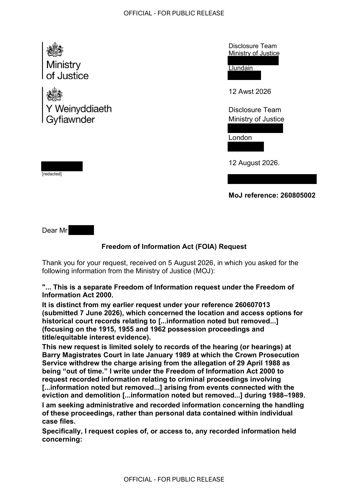

GHF-E106-R26-A1 correspondence (no disclosure)
FOI 260805002 response

Transcript
OFFICIAL - FOR PUBLIC RELEASE OFFICIAL - FOR PUBLIC RELEASE Requester Disclosure Team Ministry of Justice [address redacted] Llundain [address redacted] 12 Awst 2026 Disclosure Team Ministry of Justice [address redacted] London [address redacted] 12 August 2026. [email redacted] MoJ reference: 260805002 Dear Requester Freedom of Information Act (FOIA) Request Thank you for your request, received on 5 August 2026, in which you asked for the following information from the Ministry of Justice (MOJ): "... This is a separate Freedom of Information request under the Freedom of Information Act 2000. It is distinct from my earlier request under your reference 260607013 (submitted 7 June 2026), which concerned the location and access options for historical court records relating to [...information noted but removed...] (focusing on the 1915, 1955 and 1962 possession proceedings and title/equitable interest evidence). This new request is limited solely to records of the hearing (or hearings) at Barry Magistrates Court in late January 1989 at which the Crown Prosecution
Read more
Service withdrew the charge arising from the allegation of 29 April 1988 as being “out of time.” I write under the Freedom of Information Act 2000 to request recorded information relating to criminal proceedings involving [...information noted but removed...] arising from events connected with the eviction and demolition [...information noted but removed...] during 1988–1989. I am seeking administrative and recorded information concerning the handling of these proceedings, rather than personal data contained within individual case files. Specifically, I request copies of, or access to, any recorded information held concerning: [redacted] OFFICIAL - FOR PUBLIC RELEASE OFFICIAL - FOR PUBLIC RELEASE 1. The prosecution in which a charge dating from 29 April 1988 alleging threatening words or behaviour was withdrawn because the proceedings were considered "out of time." 2. Any records identifying: • the court in which that decision was made; • the date of the hearing; • the prosecutor involved (reported contemporaneously as [...information noted but removed...]); • the legal basis upon which the summons was determined to be out of time. 3. Records relating to [...information noted but removed...] appearances before the courts during January–March 1989, including any surviving: • cause lists; • court registers; • hearing lists; • minute books; • court log books; • bench records; • administrative case records; • listing records; • prosecution correspondence; • disposal records; or similar recorded information. 4. Records concerning the proceedings heard in Cardiff on or about 23 March 1989, including recorded information showing: • the charges before the court; • which charges were proceeded with; • which charges were withdrawn or discontinued; o the sentence imposed; • any recorded fine; • any credit given for time already spent in custody. 5. Records concerning charges arising from the November 1988 eviction of [...information noted but removed...], including allegations of assault and wanton and furious driving. 6. Any recorded information concerning: • remand or custody records; • warrants; • bail conditions; • injunction-related court administration; • any order restricting [...information noted but removed...] 7. Any retention, destruction or disposal records relating to the above court files, including: • destruction schedules; OFFICIAL - FOR PUBLIC RELEASE OFFICIAL - FOR PUBLIC RELEASE • retention schedules; • disposal certificates; • archive transfer records; • accession records; • file movement records; • records identifying when and under what authority any files were destroyed or transferred. 8. Any file references, case numbers, register entries or archive references relating to these proceedings, even where the substantive files no longer survive. If any of the requested information has been transferred to another body, such as the relevant archive service or another part of HM Courts & Tribunals Service or the Ministry of Justice, please identify the receiving body and any known reference numbers. If any information is withheld, please specify the exemption relied upon, explain why it applies, and disclose all reasonably segregable information. If some parts of this request are more readily available than others, I would be grateful if those could be disclosed without waiting for the remainder..." Your request has been handled under the FOIA. I can confirm the MOJ does not hold any information in the scope of your request. This is because the information you have requested, if held, cannot be obtained from the administrative systems held for the public authority purposes of HMCTS and MoJ. If the cases took place, any records that still exist may be limited - because of their age - and would be held by Glamorgan Archives. Such information is not held by the MoJ, and so not subject to the FOIA. The FOIA does not oblige a public authority to create information to answer a request if the requested information is not held. The duty is to only provide the recorded information held. To advise and assist you, information about how to contact Glamorgan Archives can be obtained from the link below: https://glamarchives.gov.uk/ Appeal Rights If you are not satisfied with this response, you have the right to request an internal review by responding in writing to one of the addresses below within 40 working days of the date of this response. [email redacted] Disclosure & Library Team, Ministry of Justice, Postal Point 5.22, 102 Petty France, [address redacted] OFFICIAL - FOR PUBLIC RELEASE OFFICIAL - FOR PUBLIC RELEASE You do have the right to ask the Information Commissioner’s Office (ICO) to investigate any aspect of your complaint. However, please note that the ICO is likely to expect internal complaints procedures to have been exhausted before beginning their investigation. Yours sincerely Operational Support - Knowledge and Information Liaison Officer National Support Unit | HM Courts &Tribunals Service Cymorth Gweithredol - Swyddog Cyswllt Gwybodaeth Uned Gymorth Genedlaethol | Gwasanaeth Llysoedd a Thribiwnlysoedd EF
Artifact description
Restates a new request about 1989 court proceedings; response text is cut off before any substantive determination.
| Catalogue ID | GHF-E106-R26-A1 |
|---|---|
| What it is | PDF document from Ministry of Justice / HMCTS. Attached to an email received on 12 August 2026, their reference 260805002. 4 pages. |
| From | Ministry of Justice / HMCTS |
| Email received | 12 August 2026 |
| Their reference | 260805002 |
| Pages | 4 |
| File | Requester - 260805002 - FOIA - response.pdf (146 KB) |
| State | Read |
Our integration
Part of the FOI thread with Ministry of Justice / HMCTS opened 12 August 2026. The thread's standing classification is “correspondence (no disclosure)”.
Concern to test: whether this reply answers the question as asked, or a narrower one. Not checked against the original request wording here.
Related: GHF-E106-R105-A1 — Requester the owner - 260805002 - FOIA - response.pdf · The covering email · EV-0502 in the evidence catalogue · Timeline · Disclosure Dartboard